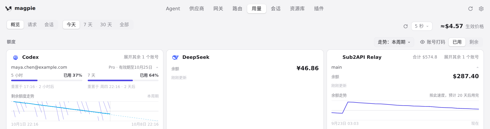
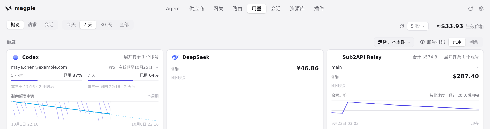
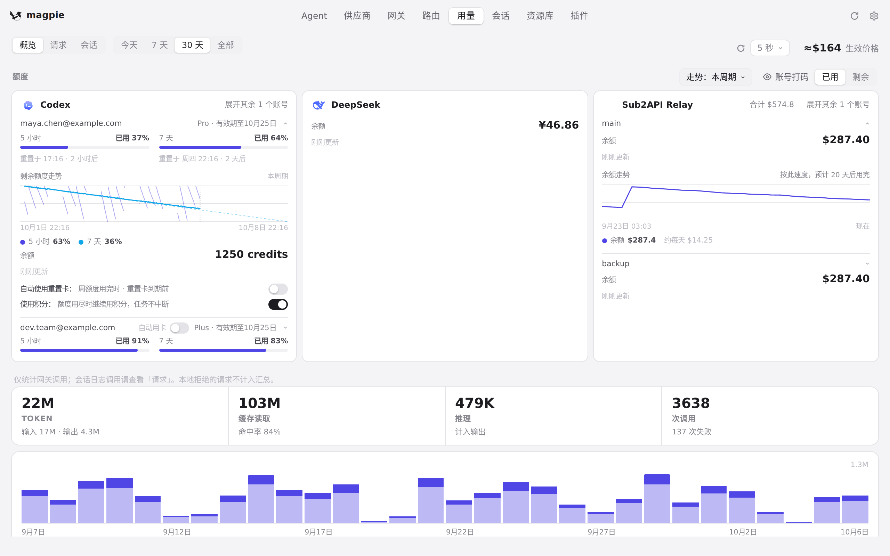
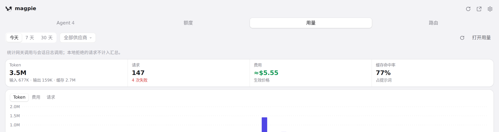
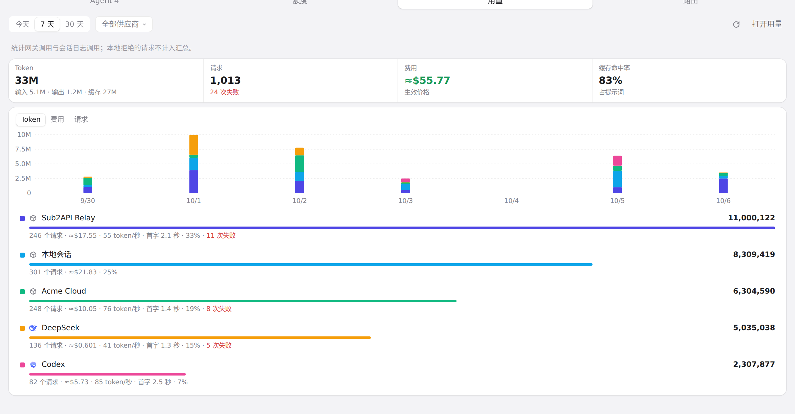
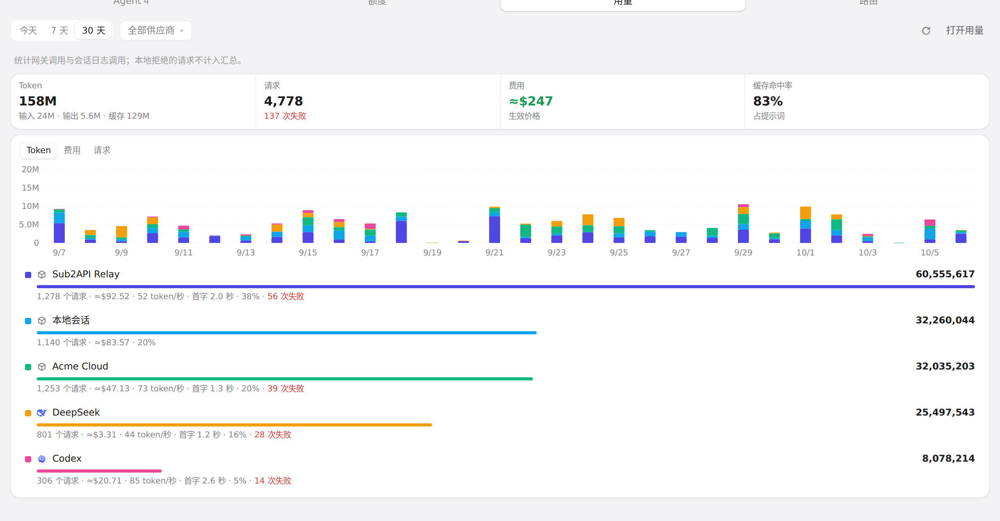

#978 界面预览
commit 24a17dc · 回到 PR · 改动让原生窗口在窄宽度下把用量页头部换成多行、刷新按钮与合计包成一组、KPI 小字换行、六宫格三列、图表日期不再重叠；并让窗口和托盘面板的周期高亮在重绘时从当前可见位置继续、连续点击不跳回、响应落在按下与抬起之间也不丢点击。
红线是鼠标走过的轨迹，红色圆环是一次点击；底部文字是这一步在做什么。空格暂停，← → 逐段查看。

用量页头部的周期与刷新/合计 · 用量页头部：标签、周期、刷新按钮与合计

用量页头部的周期与刷新/合计 · 点击「7 天」后的用量页头部

用量页头部的周期与刷新/合计 · 切换到「30 天」后的用量页

快捷面板「用量」的周期按钮 · 「用量」标签的周期按钮与总计

快捷面板「用量」的周期按钮 · 点击「7 天」后的面板用量

快捷面板「用量」的周期按钮 · 连续两次点击后的面板用量周期